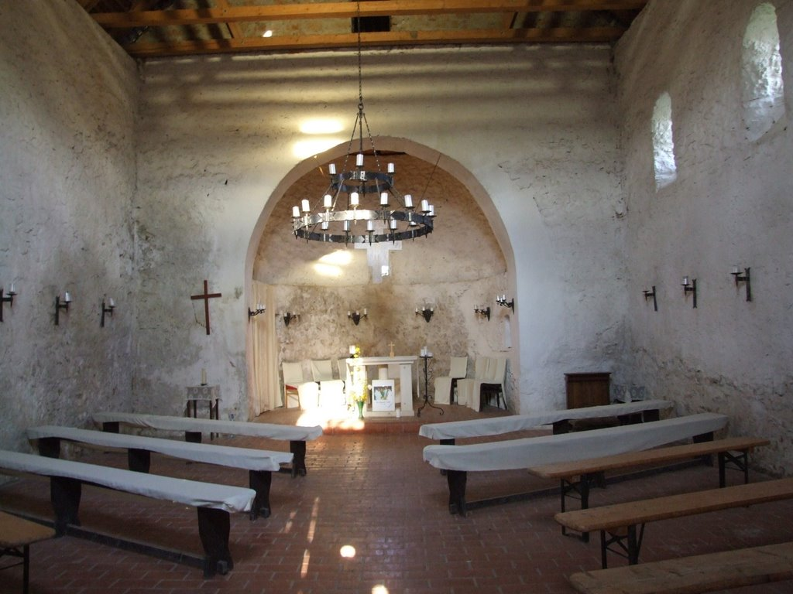

Gercsepusztai Boldogasszony templom belseje
A templom eredetileg román stílusban épült, falai a 12. századból származnak; patkó alakban kiépített szentélye ritkaságnak számít Magyarországon, csak a Felvidéken találni elvétve hasonló megoldásokat. Az Árpád-kori épület pusztulását tűzvész okozhatta, további leromlásához az is hozzájárulhatott, hogy 1595-től 1728-ig lakatlan volt a környéke. Payermann János solymári és hidegkúti plébánossága idején azonban újból benépesült a vidék...
...A helyreállítás 1732-re készült el, barokk stílusban: a felújítás során az eredeti bejáratot, amely a déli oldalon állt, befalazták, és a nyugati oldalon nyitottak újat, a szentély két oldalán pedig sekrestyét és egy másik helyiséget építettek, ezzel a szentély eredeti, patkó alakja szögletessé vált. 1774-ben újabb renoválás következett, ekkor épülhetett karzat a templomban, és a nyugati kapu fölötti kerek ablakot is ekkor alakíthatták ki.
Forrás: Wikipédia